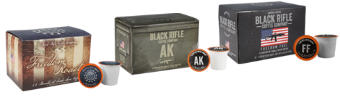

UI/UX Challenge
Interaction Flow
To Keith's delight, BRCC has a Coffee Quiz on their website that will help him decide if he'll take a liking to the magical bean brew.
In bold letters, it reads:
"TAKE THE BRCC COFFEE QUIZ TO GET MATCHED TO YOUR PERFECT ROAST. CLICK HERE!"
Keith clicks there.
The first question the quiz asks is:
"How do you brew your coffee?"
The choices presented to Keith are: Coffee Maker | Single-Serve Pods | Pour Over | Espresso | French Press | Aero Press | Cold Brew
Keith chooses single-serve pods. He's a beginner, cut him some slack.
The next question the quiz asks is:
"How do you take your coffee?"
The choices presented to Keith are: Black | Cream | Sugar | Cream & Sugar | Flavored | Other
Keith chooses cream & sugar. That's how his wife likes it, and she's smarter than him.
The next question the quiz asks is:
"What do you want your coffee to taste like? (Select all that apply)"
The choices presented to Keith are: Chocolate | Earthy | Nutty | Smoke | Floral | Fruit | Sweet/Sugary | Just coffee
Keith selects chocolate and nutty.
The next question the quiz asks is:
"How dark do you like your coffee?"
Keith is presented with a spectrum, from light to medium to extra dark, with a slider button.
Keith isn't sure, so he leaves the slider on medium.
The next question Keith is asked is:
"How much caffeine should your coffee have?"
Keith is presented with three options: None | An average amount | As much as possible
He chooses an average amount.
Finally, Keith gets a form that prompts him to enter his email address to get his results, and to sign up for offers and promotions.
Keith rolls his eyes and curses under his breath. "That's how they get ya."
He decides to stop being a baby and enters his email address and sends the form...
Immediately, a page is served with the recommended products based on his quiz answers:
Three options are presented to Keith for consideration: Freedom Roast Coffee Rounds, AK-47 Espresso Blend Coffee Rounds, and Freedom Fuel Coffee Rounds.
Keith now has a place to start on his journey toward the appreciation of coffee.

HOME